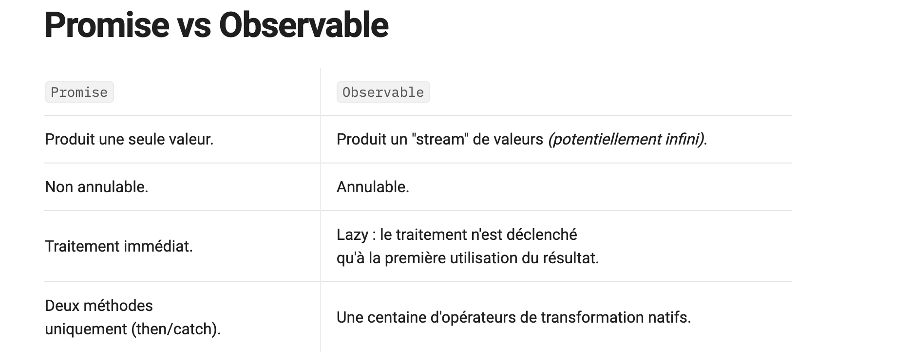

Angular
Programmation synchrone asynchrone
Programmation synchrone asynchrone
-
La programmation asynchrone est une technique qui permet à un programme de démarrer une tâche à l'exécution potentiellement longue et, au lieu d'avoir à attendre la fin de la tâche, de pouvoir continuer à réagir aux autres évènements pendant l'exécution de cette tâche. Une fois la tâche terminée, le programme en reçoit le résultat.
-
Asynchrone: une opération est asynchrone lorsqu’elle ne bloque pas l’exécution du programme (client) et que son résultat sera disponible, une fois que l’opération sera terminée.
Javascript
Javascript
- JavaScript est par défaut un langage synchrone, monothread.
- Synchrone → Les instructions s’exécutent ligne par ligne, dans l’ordre, et chaque ligne bloque la suivante tant qu’elle n’est pas terminée.
- Monothread → JavaScript utilise un seul fil d’exécution (un seul thread) : il ne peut exécuter qu’une seule tâche à la fois.
-
JavaScript propose trois méthodes de gestion du code asynchrone
Callbacks,Promises (es6), etAsync/Await (es8) -
Synchrone: Une requête synchrone bloque le client jusqu'à la fin de l'opération. Dans ce cas, le moteur javascript du navigateur est bloqué
- Asynchrone Une demande asynchrone ne bloque pas le client, c'est-à-dire que le navigateur est réactif. À ce moment, l'utilisateur peut également effectuer d'autres opérations. Dans ce cas, le moteur javascript du navigateur n'est pas bloqué.
Promise vs Observable
Promise vs Observable
Une Promiseest un objet JavaScript qui représente le résultat (ou l'état) d’une opération asynchrone
Donc il représente la succès ou l'échec d'une opération asynchrone.
Parmis les caractéristiques:- Elle ne peut émettre qu’une seule valeur (résolue ou rejetée).
- Il s’exécute dès sa création (s’exécute immédiatement)
- Non annulable: ne peut pas être interrompue : une fois démarrée, elle s’exécute jusqu’à obtenir sa valeur ou son erreur
- Cas d’utilisation: Appel API simple qui renvoie une seule réponse.
Un Observableest un objet JavaScript (RxJS) qui représente un flux de données asynchrones.
Contrairement à une Promise, il peut émettre plusieurs valeurs dans le temps, on s’y abonne avec subscribe et on peut se désabonner.
Parmis les caractéristiques:- Il peut émettre plusieurs valeurs dans le temps
- Lazy : ne s’exécute que lorsqu’on s’abonne (subscribe())
- Annulable : on peut stopper l’exécution via unsubscribe() ou des opérateurs RxJS (takeUntil + Subject, etc.).
- Cas d’utilisation: Flux de données continus (ex : WebSocket, événements DOM, timer).
- Idéal pour
suivredes événements ou des données continues.
- Idéal pour
RxJSest une bibliothèque pour la programmation réactive qui permet de manipuler des flux de données asynchrones (comme des événements, des requêtes HTTP, ou des timers) de manière déclarative
Permet de réagir aux événements et aux données asynchrones de façon fonctionnelle, plutôt que d’utiliser des callbacks ou des promesses dispersées.

La programmation réactive | RxJS
La programmation réactive | RxJS
- Un paradigme de programmation qui permet de manipuler des flux de données asynchrones (comme des événements, des requêtes HTTP, ou des timers) de manière déclarative
- Permet de réagir aux événements et aux données asynchrones de façon fonctionnelle, plutôt que d’utiliser des callbacks ou des promesses dispersées.
Cold vs Hot Observable
- Que se passe-t-il si on fait deux
subscribesur le même Observable ?- Chaque
subscribedéclenche l’exécution indépendamment (cold Observable).
- Chaque
- Observable froid (Cold Observable) vs Observable chaud (Hot Observable)
- Cold Observable (le cas le plus courant) : of, from
- Par défaut, les Observables sont "cold", c’est-à-dire que l’opération ne démarre que lorsqu’on s’abonne.
- Chaque abonnement (
subscribe) est doncisolé: il ne partage pas l’exécution avec les autres abonnés. - Chaque abonnement (
subscribe) déclenche une nouvelle exécution indépendante - Chaque abonnement (
subscribe) redémarre l’exécution et les valeurs sont indépendantes
- Hot Observable Subject, BehaviorSubject, fromEvent
- Tous les abonnés (
subscribe) partagent le même flux de données. - Hot Observables produit des valeurs partagées même si un abonné (un nouveau
subscribe) arrive après le début.
- Tous les abonnés (
- Cold Observable (le cas le plus courant) : of, from
- Dans RxJS, un observable représente une source de données (un stream) ou d'événements auxquels on peut s’abonner.
- https://medium.com/@vbourdeix/observables-chauds-et-froids-dans-angular-avec-rxjs-c65f26ea6b67
TypeScript
- TypeScript est un méta-langage de Javascript qui propose d’ajouter un typage fort aux variables, aux fonctions, il propose aussi des fonctionnalités supplémentaire à Javascript comme l’annotation et aussi le mécanisme de classe.
- TypeScript offre une programmation plus orientée objet et ^^un compilateur qui permet de convertir le code TypeScript en code Javascript équivalent^, interprétable par les navigateurs
SPA
SPA
- Une SPA est composé d’une seule page HTML,
cette page HTML va contenir suffisamment de code Javascript pour pouvoir faire fonctionner l’ensemble de l’application une fois elle est envoyé par le serveur. - Un site web traditionnel : le serveurs reconstruit la page et l’envoi à chaque fois l’utilisateur change d’écrans dans le même site web
- Une application Web de type SPA, le serveur envoi une seule fois la page web (l’application web)
Comment fonctionne Angular en générale ?
- Pour démarrer une application, Angular va exécuter les fichier dans l’ordre suivants
- D’abord Angular va regarder
angular.jsonqui va lui rediriger vers le fichiermain,main.tsdans laquelle on va boostraperle module racinequi lui même va bootsraperle composant racineet le selector de ce composant va être injecté dans le fichierindex.htmlqui contient le template de laSPA. - Module racine qui va tirer les autres
- D’abord Angular va regarder
MVVM
MVVM
- Architecture: ça signifie
ModelView,ViewModel Architecture composé de 3 partiesModel: La couche qui représente les données et la logique métier d’une application c’est la structure de données (entités) du projetView: La couche visuelle de l’application c’est le code d’interface utilisateur donc le Template HTML du composantViewModel: La couche qui représente la partie logique du composant: c’est une couche abstraite dans l’application entre les données et l’interface,
qui fait le lien entre les deux: Model et View en poussant les données à jour dans (View) l'interface utilisteur via le mécanisme (Binding) puis intercepter les interaction dans l'interface et les transmet au Model du composant avec la (liaison d’événement)
Cycle de vie
Cycle de vie
- Angular fournit des méthodes spécifiques pour mettre en place des traitements lors
de
la créationla mise à jour de l’affichageetla destructiond’un composant.- Cycle de vie , il est composé de différents phases comme la création, la mise à jour de l’affichage et la destruction,
il y a plusieurs interfaces qu’on peut l’implémenter dans un composant.
- La première phase c’est
ngOnChanges:- Intercepter des modification de propriétés qui pourraient survenir.
- Détecter à chaque fois que les valeurs des propriétés coté composant sont changés.
ngOnInit: Assurer que les propriétés d’un composant ont bien été initialisé avec le templatengOnDestroy: appelée en dernier permet de nettoyerproprementle composant lorsqu’il est détruit il utilisé généralement pour éviter la fuite du mémoire par rapport au abonnement en se désabonnant sur des évènements asynchrones
- La première phase c’est
- Cycle de vie , il est composé de différents phases comme la création, la mise à jour de l’affichage et la destruction,
il y a plusieurs interfaces qu’on peut l’implémenter dans un composant.
Constructor vs ngOnInit
Constructor vs ngOnInit
Le constructeurest utilisé pour configurer l’injection de dépendance qui est relié au système d’injection de dépendance.- Le rôle de
ngOnInitest de définir le comportement du composant à l’initialisation - L'écosystème Angular est un peu particulier, on’est pas dans une programmation traditionnelle, Angular est construit autour des composants c’est pour ça son fonctionnement est un peu différent.
Composant (Component)
Component
- C’est l'élément le plus basique d’une application Angular, il est toujours composé d’une classe Typescript, d’un template HTML et d’un fichier CSS pour le style
- Combine logique (TypeScript), interface (HTML) et style (CSS)
Component standalone
standaloneest un composant qui ne dépend pas du module, qui n’a pas besoin d’être déclaré dans un moduleNgModulepour être utilisé,-
Il gère lui-même ses imports et peut être utilisé directement dans le routing ou dans d’autres composants.
-
Intérêts d’un composant standalone
- Simplicité:
- L’intérêt est de simplifier Angular, en supprimant la dépendance aux modules.
- Autonomie des composants
- Chaque composant gère ses propres dépendances
- On évite la complexité des modules, on voit immédiatement quelles dépendances un composant utilise via
imports
- On évite la complexité des modules, on voit immédiatement quelles dépendances un composant utilise via
- Plus besoin de modules intermédiaires
- Chaque composant gère ses propres dépendances
- Performance et rapidité
- Chargement et build plus rapides.
- On réduit le code, on améliore les performances au démarrage.
- Simplicité:
Lazy loading
Lazy loading
- Lazy loading (chargement à la demande): c'est l'une des techniques la plus puissantes pour améliorer la perfermance d'une application.
- Pourquoi
- Le chargement initiale va plus rapide = on charge seulement le composant principal
- Puis charger à la demande de l'utilisateur (Généralement on y va pour telle ou telle fonctionnalités et ensuite on repart c'est pour ca le Lazy loading a tout son intéret)
Service
Service
- C’est une classe Typescript, il est instancié une seule fois, via le mécanisme d’DI, il peut être utilisé partout dans l’application.
Component vs Directive
Component vs Directive
Un Composantest une association entreune vueetun comportement spécifique.Une directiveest une classe qui ajoute un comportement ou une transformation à des éléments du DOM existants, il ne possède pas de template (une vue)- Un composant c’est une directive avec un template et de code CSS en plus.
- Un Directive permet de définir un comportement récurrent en 1 ou plusieurs éléments du DOM qui peut être appliqué à plusieurs éléments du DOM
Directive
Directive
- Une directive est une classe qui ajoute un comportement ou une transformation à des éléments du DOM existants, il ne possède pas de template (une vue)
- Un élément Angular qui permet de factoriser un comportement commun entre des éléments différents du DOM.
- Les directives n’ont pas de vue, il contiennent seulement la logique pour factoriser des éléments du DOM
- Il existe 3 types (
directive d’attributs,directive structurellesetles composants)Directive d’attributssont celle qui modifient l’apparence et le comportement du DOM comme ngStyle et ngClassDirective structurellessont celles qui manipule le DOM, en ajoutant, retirant ou modifiant de éléments, on trouve ngIf ngForLes composantsc’est une directive avec un template et de code CSS en plus
Pipes | pure | impure
Pipes
- Un élément qui fait une transformation de données,
- Un élément natif qui prend des données en entré et les transformer en un certain format de sortie.
Pipe pureest appelé uniquement lorsque Angular détecte un changement dans la valeur ou le paramètre qui est passé au Pipe.
Pipe impureest appelé pour chaque cycle de détection de changement, peu importe que la valeur ou les paramètres ont changés. Généralement, on évite d'utiliser les pipes impures, car ils n'effectuent pas des traitements très efficaces.
Routage
Routage
- Le routage: permet de construire un système de navigation dans l’application,
- Il est chargé d’interpréter une URL du navigateur comme une instruction pour naviguer vers le composant correspondant
Guards
Guards
- Ce sont des interfaces qui permettent d’indiquer au routeur s’il doit autoriser ou non la navigation vers des URL données
- Pour prendre décision, Angular se base sur une classe qui implémente l’interface des
Guardset qui va retourner une valeur booléenne true ou false CanActivate,CanDeactivate,CanActivateChild,CanLoadetResolve.
NgModule
NgModule
- Un module Angular permet de regrouper différents éléments afin de répondre à une fonctionnalité précise dans le projet.
router-outlet
L'element router-outlet
- Est un élément du routeur Angular, une directive du routeur Angular qui permet de réserver un “emplacement” dans notre template, permet de dynamiser une portion des templates en fonction d’une url donnée.
Balise Base
Balise Base
- Elle permet d’indiquer au routeur d’Angular comment il doit composer les URL pour la navigation.
- Cette balise, dit au routeur Angular dans quel dossier se trouve le code source pour faire la redirection correctement.
CLI
CLI
- CLI : Interface en ligne de commande qui fait entièrement partie de le framework Angular ça permet d’accélérer le processus de développement
Databinding
Databinding
Interpolation{{}}Une syntaxe spécifique Double accolade -- Permet d’afficher une valeur du composant dans le template (texte)Property binding[]Une syntaxe spécifique Crochet, Property binding Lie une propriété HTML/DOM ou Angular à une valeur du composant.Event Binding(event)="handler()"Permet de réagir aux événements émis par le template (click, input… les champs de saisis)Two-Way Binding[(ngModel)]Combineproperty bindingetevent bindingEventEmitterpour synchroniser automatiquement le template et le composant.
Route '**'
Route '**'
- Une route générique pour le cas ou l’utilisateur se rend sur aucune des routes définie
ViewEncapsulation
- Définit comment les styles CSS d’un composant sont appliqués : est-ce qu’ils restent limités au composant ou bien se propagent globalement dans l’application.
AOT: ahead of time
AOT: ahead of time
- Le compilateur (mode de compilation) Angular ahead-of-time (
AOT) convertit le code Angular HTML et TypeScript en code JavaScript pendant le processus debuild(tous compilé à la fin et sortir un seul livrable, ce type est plus adapté au production)- ng serve
- Le compilateur (mode de compilation) Angular (
JIT) convertit le code Angular HTML et TypeScript en code JavaScript pendant le processus dedeveloppement, pendant l'execution de l'application- ng build
- AOT: compile tous les composants et modèles HTML bien avant qu'ils ne soient servis au navigateur.
- la phase de construction avant que le navigateur ne télécharge et n'exécute ce code.
- La compilation de l’application pendant le processus de construction permet un rendu plus rapide dans le navigateur.
- AOT (Ahead-of-Time) Compilation:
- AOT compilation is a process in which your Angular application’s code is compiled and optimized before it’s delivered to the browser.
- During AOT compilation, Angular’s templates are also compiled ahead of time into JavaScript code.
Transpilation | Compilation
Transpilation
- Transpilation :
- Conversion du code d'un langage de haut niveau vers un autre langage de haut niveau.
- Transpile signifie que tout code écrit en TypeScript est converti en JavaScript, qui est compris par tous les navigateurs.
Compilation
- Compilation
- Conversion du code d'un langage de haut niveau en langage de niveau machine
- Angular propose deux manières de compiler votre application:
- Pendant la phase de développement JIT: Compile l’application dans le navigateur au moment de l'exécution.
- Il s'agissait de la valeur par défaut jusqu'à Angular 8.
- Pendant la phase de production AOT:: Compile l’application et les bibliothèques au moment de la construction (BUILD). la valeur par défaut à partir d'Angular 9.
- Avec la compilation AoT l’application Angular est compilée durant la phase du Build, ce qui rend ce type de compilation plus adaptée pour un environnement de production Si non l’application est compilé directement dans le navigateur avec la Compilation JiT, ce qui rend cette compilation plus adapté pour un environnement de développement
- Pendant la phase de développement JIT: Compile l’application dans le navigateur au moment de l'exécution.
tsconfig.json
- Chaque projet Angular possède un fichier nommé
tsconfig.jsonqui contient les paramètres pour convertir le fichier .TS en fichier .JS - Le fichier
tsconfig.jsoncontient une balise nomméetargetqui indique quelle cible de javascript doit être émise à partir du typescript donné.
Ivy
Ivy
- Le nom du dernier compilateur d’Angular qui a été complètement écrit à partir de la version 4
- Transforme le code HTML en un code javascript interprétable
- Caractérisé par un Délai de compilation plus optimisé
- Un livrable (bundle) léger en poids
- Apporter certain fonctionnalité supplémentaire comme
le lazy loadinget un système de détection de changement interne efficace
- Ivy peut travailler dans deux modes de compilation différents :
- AOT - Compilation pendant le build
- JIT - Compilation dans le navigateur, au moment de l’exécution
Variable référencé dans le template
- Une Variable référencé dans le template est une réference à un élement du DOM, que l'on peut déclarer directement depuis le template.
- Ca va permettre d'accéder à la valeur du DOM oú elle est déclarée.
- Il est accesible que dans ce template.
Template driven vs reactive form
Template driven vs reactive form
Template driven form:- C'est un formulaire où la logique et la structure des champs sont principalement définies dans le template
HTML. - C'est un formulaire caractérisé par une structure et une logique de champs définies dans le template
HTML. - Il utilise les directives comme
ngModelpour relier les champs du formulaire au modèle de données. - Simple, déclaratif et pratique pour les petits formulaires.
- C'est un formulaire où la logique et la structure des champs sont principalement définies dans le template
Reactive form- Est un formulaire où la structure et la logique des champs sont définies dans le code
TypeScriptà l’aide de classes commeFormControl,FormGroupetFormBuilder. - Est un formulaire caractérisé par une structure et une logique de champs définies dans le code
TypeScript - Il s’appuie sur le paradigme réactif d’Angular et d’RxJS, offrant un meilleur contrôle, une validation dynamique et une meilleure testabilité.
- Est un formulaire où la structure et la logique des champs sont définies dans le code
RXJS notes
RXJS notes
- Pour attendre la réponse de deux appels HTTP (ou plus) avant de traiter leurs résultats,
l'opérateur
combineLatestouforkJoinde RxJS peut être utilisé.forkJoin: Attendre la fin complète de plusieurs appels HTTP et traiter une seule foiscombineLatest: Reagir en continu dès qu'une source change, après la première émission
- mergeMap → Plusieurs tâches parallèles, pas besoin de respecter l’ordre.
- concatMap → Tâches séquentielles, ordre important, pas de surcharge.
- switchMap → Dernière tâche uniquement, utile pour annuler l’ancien résultat (ex. recherche live).
pipedans un obs- Elle permet de chaîner plusieurs opérateurs RxJS de manière lisible et fonctionnelle.
Subject - Variantes
Subject -- variantes
Subject: c'est unObservablepermet d’émettre (diffuser, envoyer) des valeurs explicitement (manuellement) avecnext()et de les partager à tous les abonnés en même temps, qui ne conserve aucune valeur- Hot Observables
- Qui partage une source de données entre plusieurs abonnés en temps réel (ex. WebSocket, timer).
- Hot Observables
BehaviorSubjectest unSubject(une variante d'un Subject) qui conserve la dernière valeur émise et qui a une valeur initialeReplaySubjectest unSubjectqui garde un historique des valeurs et les renvoie aux nouveaux abonnés,
il n’a pas de valeur initiale, mais il est créé en indiquant combien de messages il doit conserver dans son historique.
- Les Variantes courantes d'un Subject
- BehaviorSubject : contient la dernière valeur émise et la renvoie immédiatement aux nouveaux abonnés.
- ReplaySubject : garde un historique des valeurs et les renvoie aux nouveaux abonnés.
- AsyncSubject : émet seulement la dernière valeur à la fin du flux.
Signal
Signal
- Un
Signalest une api réactive qui déclenche automatiquement les mises à jour,- Ce qui simplifie la gestion d’état
- Ce qui rend la gestion des états plus simple et performante que les Observables.
NG 18 nouveautées
NG 18 nouveautées
- [Angular 18]
- Introduction des
Signalspour rendre l’état plus simple à gérer - Une nouvelle syntaxe de contrôle des boucles et conditions (@if, @for)
trackBydans@forest obligatoire pour la performance, contrairement à trackBy dans *ngFor.- track permet à Angular de reconnaître les éléments d’une liste par un identifiant unique afin de ne pas recréer inutilement le DOM à chaque mise à jour.
- La construction ("build") est beaucoup plus rapide.
- Introduction des
- [Angular 15]
- Intercepteurs HTTP et Guards fonctionnels
- On peut définir la logique de guards ou intercepteurs sous forme de fonctions
- La Directive Composition API
- Intercepteurs HTTP et Guards fonctionnels
NG Notes | détection de changements
NG notes
-
Qu’est-ce que la détection de changements dans Angular ?
-
Déf 1
Angular utilise une librairie qui s'appelle
ZoneJSqui va se charger de détecter les changements.A chaque fois l'utilisateur interagit avec l'application via (des inputs des bouttons ...) ou alors quand des résultats d'appel asynchrone sont récus.
ZoneJSva intercepter ces évenements et va informer AngularA ce stade, dans la stratégie par défaut, Angular va partir du principe que
tout événement notifié par ZoneJSpeut avoir un impact sur n'importe quel composant affiché à l'écran.Angular va donc vérifier pour chaque composant s'il doit le mettre à jour ou non, Angular va parcourir l'arbre du composant.
Et c'est pour ca lorsqu'on clique sur un bouton, Angular vérifie le composant et applique immédiatement le changement
-
-
Déf 2
- C’est le mécanisme qui permet à Angular de synchroniser automatiquement la vue avec les données du composant
- Comment Angular 18 avec Signals change-t-il la détection de changements ?
- Les Signals permettent une mise à jour automatique dans le template, ne recalculant que les parties qui dépendent des valeurs modifiées.
La Directive Composition API:- Est une fonctionnalité d’Angular qui permet d’attacher des directives directement
au composant via
hostDirectives, sans les utiliser dans le template.
Elle facilite la réutilisation de comportements, la modularité et la simplification des templates. - Déf 2: permet de composer et réutiliser facilement des comportements dans plusieurs directives,
améliorant la modularité et la maintenabilité du code.
import { Component } from '@angular/core'; import { HoverHighlightDirective } from './hover-highlight.directive'; @Component({ selector: 'app-example', standalone: true, template: ` <p>Survole-moi !</p> `, // On compose la directive ici, sans l'écrire dans le HTML hostDirectives: [HoverHighlightDirective] }) export class ExampleComponent {}
- Est une fonctionnalité d’Angular qui permet d’attacher des directives directement
au composant via